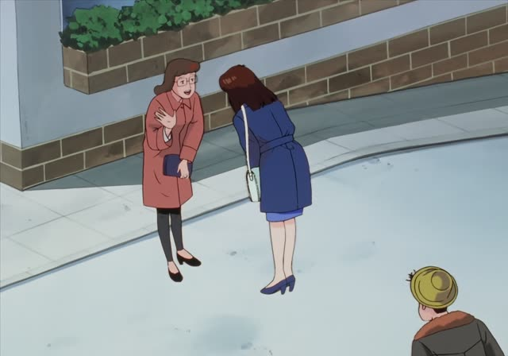
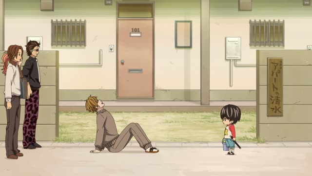

～さ

Oishinbo · Episode 12
奥行きの深さに驚いている今日この頃です。
"These days I'm amazed by the depth of it all." [the world of food]
～さ turns an adjective into a noun: how much of that quality there is. い-adjectives: drop い, add さ (深い → 深さ, depth). な-adjectives: add さ (静か → 静かさ).
On this card, Kurita talks about how deep food culture is. 深さ: depth. です makes it polite.
Common ones: 高さ (height), 長さ (length), 重さ (weight), 大きさ (size), 優しさ (kindness).
Dungeon Meshi · Episode 11
でも私だって速さには自信があるの。
"But I'm confident in my speed too."
On this card, Marcille says she can heal fast. 速い → 速さ: speed.
Quick Examples
Measuring a box.
この箱の大きさは？
"What size is this box?"
大きい → 大きさ.
CasualAt the airport.
荷物の重さを量ります。
"I'll weigh your luggage."
PoliteTalking about a friend.
彼女の優しさが好き。
"I love her kindness."
CasualOn a mountain.
この山の高さは3000メートルです。
"This mountain is 3,000 meters high."
PoliteWith and without
この山は高い。
"This mountain is high." An adjective.
この山の高さ
"The height of this mountain." A noun.
Examples from Media
1 Litre of Tears · Episode 3
それは誰に対する優しさですか？
"Who is that kindness really for?"
A doctor to Aya's mother.
Samurai Champloo · Episode 3
刀抜くのが見えねえくれえの速さでして
"He's so fast you can't even see him draw"
Shirokuma Cafe · Episode 28
そこそこのかわいさでいいのかな。
"Maybe so-so cuteness is enough."

Kotaro Lives Alone · Episode 6
この距離を走れる強さを手に入れた！
"I've gained the strength to run this far!"
Goblin Slayer · Episode 3
このうまさは分からんよ！
"They'd never get how good this is!"
うまい → うまさ.
Kekkon Dekinai Otoko · Episode 8
入院？どうした？暑さでやられたか？
"Hospital? What happened? Did the heat get her?"
Dungeon Meshi · Episode 14
背の高さでつるむ相手を
"(I've never chosen friends) by their height"
Vinland Saga · Episode 1
年を追うごとに寒さが厳しくなることだ。
"Every year the cold gets harsher."